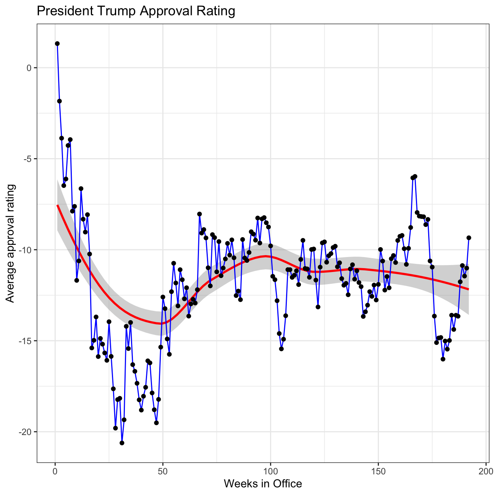
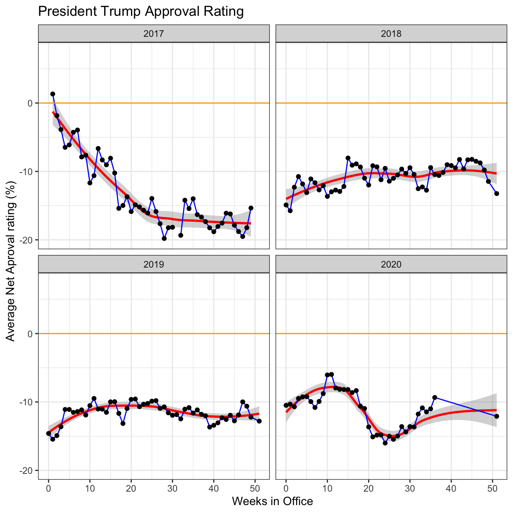

# Use `lubridate` to fix dates, as they are given as characters.
approval_polllist <- approval_polllist %>% mutate(modeldate = mdy(modeldate),enddate = mdy(enddate),startdate = mdy(startdate),createddate = mdy(createddate))Trump’s average net approval rate (approve- disapprove) for each week since he got into office.
weeks <- approval_polllist %>%
mutate(week = cut.Date(enddate, breaks = "1 week", labels = FALSE, start.on.monday=0))
graph_weeks <- weeks %>% group_by(week) %>%
summarise(net_approval = mean(adjusted_approve) - mean(adjusted_disapprove)) %>%
ggplot( aes(x=week, y=net_approval, group=1)) +
geom_smooth(color="red") +
geom_line(color="blue") +
geom_point() +
labs(title="President Trump Approval Rating", x="Weeks in Office", y="Average approval rating") +
theme_bw()
graph_weeks
Splitting up by year:
year_faceted <- weeks %>% mutate(facet_year = year(enddate)) %>% group_by(week) %>%
summarise(net_approval = mean(adjusted_approve) - mean(adjusted_disapprove), facet_year=mean(facet_year)) %>%
mutate(week=week%%52) %>%
filter(facet_year == 2017 |facet_year == 2018 |facet_year == 2019 |facet_year == 2020) %>%
ggplot( aes(x=week, y=net_approval, group=1)) +
geom_smooth(color="red") +
geom_line(color="blue") +
facet_wrap(~facet_year) +
geom_point() +
labs(title="President Trump Approval Rating", x="Weeks in Office", y="Average Net Aproval rating (%)") +
theme_bw() +
geom_hline(yintercept=0, linetype="solid", color = "orange") +
ylim(-20, 7.5)
year_faceted
Comparing Confidence Intervals for week 15 (6-12 April 2020) and week 34 (17-23 August 2020)
ci_week_15 <- weeks %>%
filter(week == "15") %>%
summarise(mean_week_15 = mean(adjusted_approve)-mean(adjusted_disapprove),sd_week_15 = sd(adjusted_approve-adjusted_disapprove), count = n(), t_critical = qt(0.975, count-1), se = sqrt(( (sd(adjusted_approve)^2/count)+(sd(adjusted_disapprove)^2/count))), margin_of_error = t_critical * se, ci_low = mean_week_15 - margin_of_error, ci_high = mean_week_15 + margin_of_error)
formattable(ci_week_15)| mean_week_15 | sd_week_15 | count | t_critical | se | margin_of_error | ci_low | ci_high |
|---|---|---|---|---|---|---|---|
| -8.07 | 3.81 | 78 | 1.99 | 0.325 | 0.647 | -8.72 | -7.43 |
ci_week_34 <- weeks %>%
filter(week == "34") %>%
summarise(mean_week_34 = mean(adjusted_approve)-mean(adjusted_disapprove),sd_week_34 = sd(adjusted_approve-adjusted_disapprove), count = n(), t_critical = qt(0.975, count-1), se = sqrt(( (sd(adjusted_approve)^2/count)+(sd(adjusted_disapprove)^2/count))), margin_of_error = t_critical * se, ci_low = mean_week_34 - margin_of_error, ci_high = mean_week_34 + margin_of_error)
formattable(ci_week_34)| mean_week_34 | sd_week_34 | count | t_critical | se | margin_of_error | ci_low | ci_high |
|---|---|---|---|---|---|---|---|
| -15.4 | 4.02 | 89 | 1.99 | 0.316 | 0.628 | -16.1 | -14.8 |
Explanation: The Confidence Intervals between week 15 and week 34 show a marked decrease in the approval rating of close to 8% both in terms of high and low, showing an overall marked worsening in terms of popular perception of President Trump’s work. A possible explanation would be that in the 200 weeks between the two periods under consideration a series of interventions, executive orders and public statements have made the President increasingly unpopular, a hypehtisis shown by the previous graphs that show a constant downward trend in ratings.